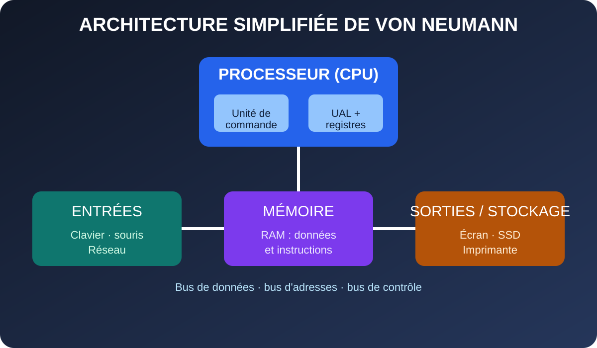
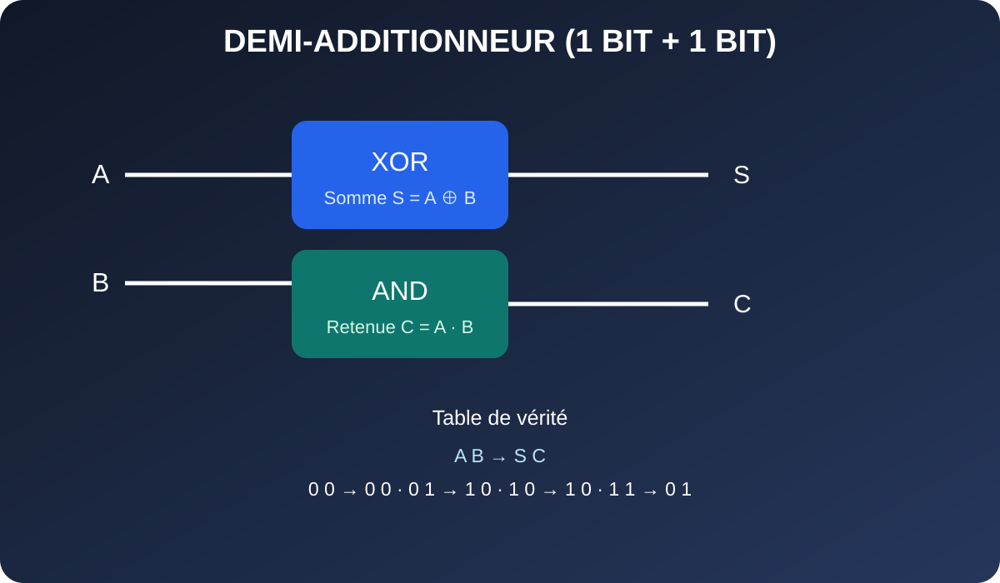

Architecture d'un ordinateur
Un ordinateur suit le modèle de Von Neumann : un processeur qui exécute des instructions stockées en mémoire, relié aux entrées/sorties par des bus.
- Processeur (CPU) : l'unité de commande lit et décode les instructions, l'unité arithmétique et logique (UAL) fait les calculs, les registres stockent les données en cours de traitement.
- Mémoire : la RAM (rapide, vidée à l'extinction) contient les programmes et données en cours d'utilisation ; le stockage (SSD, disque dur) conserve les données durablement.
- Entrées/sorties : clavier, souris, écran, réseau, etc.
- Bus : les « routes » entre les composants — bus de données, bus d'adresses, bus de contrôle.

Systèmes de numération
Le binaire (base 2) utilise les chiffres 0 et 1 : c'est le langage des circuits. L'hexadécimal (base 16) utilise 0–9 et A–F ; chaque chiffre hexadécimal correspond à 4 bits, ce qui rend les nombres binaires plus lisibles.
| Décimal | Binaire | Hexadécimal |
|---|---|---|
| 0 | 0000 | 0 |
| 5 | 0101 | 5 |
| 9 | 1001 | 9 |
| 10 | 1010 | A |
| 13 | 1101 | D |
| 15 | 1111 | F |
Exemples de conversions
- Décimal → binaire : 13 = 8 + 4 + 1, donc
1101. - Binaire → décimal :
10110110= 128 + 32 + 16 + 4 + 2 = 182. - Binaire → hexadécimal : on découpe en groupes de 4 bits,
1011 0110= B6. - Hexadécimal → décimal :
0x2F= 2 × 16 + 15 = 47, soit0010 1111en binaire.
Portes logiques
Une porte logique reçoit un ou plusieurs bits et donne un bit de sortie.
| A | B | ET (AND) | OU (OR) | OU exclusif (XOR) | NON-ET (NAND) |
|---|---|---|---|---|---|
| 0 | 0 | 0 | 0 | 0 | 1 |
| 0 | 1 | 0 | 1 | 1 | 1 |
| 1 | 0 | 0 | 1 | 1 | 1 |
| 1 | 1 | 1 | 1 | 0 | 0 |
La porte NON (NOT) inverse simplement son entrée : 0 devient 1 et 1 devient 0.
Exemple : le demi-additionneur, qui additionne deux bits. La somme S vaut A XOR B et la retenue C vaut A ET B.
| A | B | S (somme) | C (retenue) |
|---|---|---|---|
| 0 | 0 | 0 | 0 |
| 0 | 1 | 1 | 0 |
| 1 | 0 | 1 | 0 |
| 1 | 1 | 0 | 1 |

Optionnel — vidéo/présentation
Comprendre le demi-additionneur
Un demi-additionneur additionne deux bits d’entrée A et B. Il produit deux sorties : la somme S (bit de poids faible) et la retenue C (bit transmis à la colonne suivante).
| A | B | S = A XOR B | C = A AND B | Interprétation |
|---|---|---|---|---|
| 0 | 0 | 0 | 0 | 0 + 0 = 0 |
| 0 | 1 | 1 | 0 | 0 + 1 = 1 |
| 1 | 0 | 1 | 0 | 1 + 0 = 1 |
| 1 | 1 | 0 | 1 | 1 + 1 = 10 en binaire |
Équations logiques : S = A ⊕ B et C = A · B. La porte XOR donne 1 lorsque les entrées sont différentes ; la porte AND donne 1 uniquement lorsque les deux entrées valent 1.
Exemples simples
- Si A = 0 et B = 1, les bits sont différents : S = 1 et C = 0.
- Si A = 1 et B = 1, la somme vaut zéro dans la colonne courante et une retenue est produite : 1 + 1 = 10₂.
Le demi-additionneur ne reçoit pas de retenue entrante. Pour additionner des nombres binaires sur plusieurs colonnes, on utilise notamment un additionneur complet, qui prend aussi en compte la retenue précédente.
🧾 Fiche de transparence IA
- Outils utilisés :
- Claude (brouillon initial du projet) et ChatGPT (révision et compléments de cette version).
- Rôle de l'IA :
- Claude a rédigé le brouillon de la présentation de l'architecture, des conversions binaire/hexadécimal et des tables de vérité.
- Validation et travail personnel :
- L’étudiant doit relire et comprendre chaque élément, vérifier les informations avec les sources citées et exécuter lui-même les programmes ou manipulations avant la remise. Les exemples et sorties signalés comme démonstrations ne sont pas des preuves personnelles. Les choix finaux, la validation et la présentation doivent être assumés par l’étudiant.
- Sources vérifiées :
- Stanford — organisation du processeur ; All About Circuits — demi-additionneur.